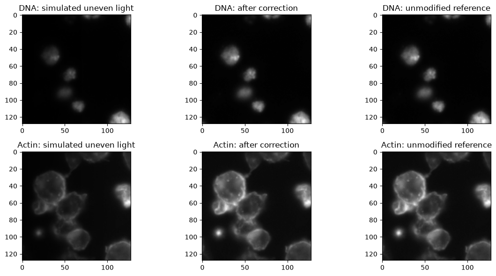
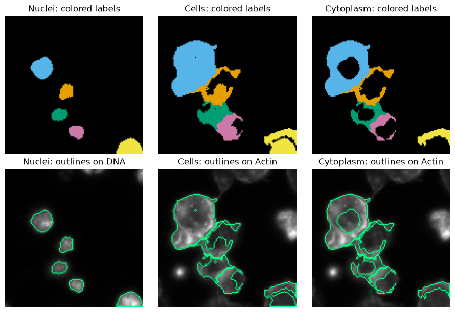
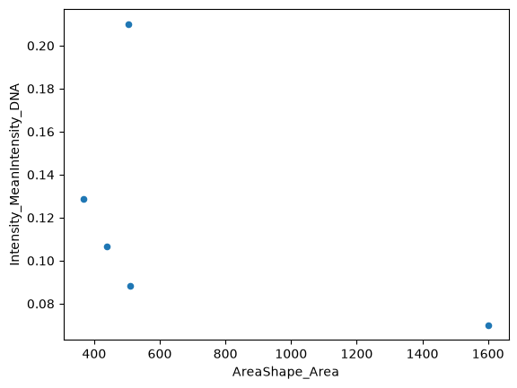
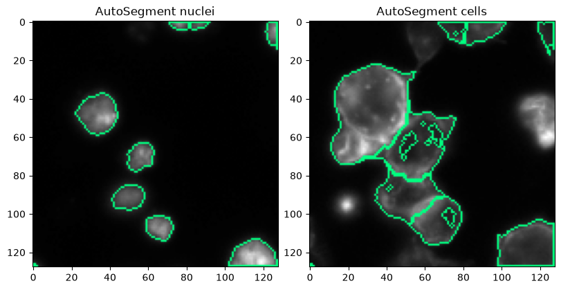

Cell Profiling Anywhere#
From microscopy images to cell profiles#
Correct illumination → segment cells → measure features → save results.
This notebook demonstrates illumination correction, segmentation, and measurements with cp-anywhere.
The main workflow uses corrected images to find cells and calculate their features.
We add a clearly labeled simulated lighting gradient to the real images so correction has a known, visible target.
You can use image files or NumPy arrays, work with pandas tables, and save results for later analysis.
The measurement engine runs in Rust. No CellProfiler application is needed for this example.
We use a bundled real DNA/actin image from BBBC007. No image download is needed. The sample is a small crop, not a complete biological experiment.
Start here#
From the repository root, run uv sync --frozen --group docs.
Open this notebook and select the repository’s .venv Python interpreter.
Run the cells in order.
%matplotlib inline
from pathlib import Path
import matplotlib.pyplot as plt
import numpy as np
import pandas as pd
import cp_anywhere as cp
# Work from either the repository root or this notebook's folder.
project = Path.cwd()
if not (project / "fixtures").exists():
project = Path("../..")
sample = project / "fixtures/real/real_bbbc007"
1. Load two images#
load_array reads NPY, TIFF, PNG, and other supported image formats.
These sample images are 8-bit, so dividing by 255 puts intensities between zero and one.
For your own data, change the file paths and use the correct intensity scale.
dna = cp.load_array(sample / "DNA.npy").astype(float) / 255
actin = cp.load_array(sample / "Actin.npy").astype(float) / 255
fig, axes = plt.subplots(1, 2, figsize=(7, 3))
axes[0].imshow(dna, cmap="gray")
axes[0].set_title("DNA")
axes[1].imshow(actin, cmap="gray")
axes[1].set_title("Actin")
plt.show()

2. Correct illumination#
Controlled demonstration: real cells, simulated uneven lighting. A small crop alone does not tell us its true microscope illumination. Instead, add a known lighting gradient: 25% brightness at the left edge and 100% at the right. The unmodified images are the reference for this added distortion, not proof that the original lighting was uniform.
Our simulated flat-field reference contains only this gradient, without cells.
calculate_illumination fits a smooth function to that reference.
apply_illumination divides the shaded images by that function.
We use the same simulated lighting for both channels in this example.
rescale_option="No" keeps the original intensity scale.
The corrected images feed segmentation and measurements below. For real experiments, use measured calibration images or suitable representative images for each channel.
# Simulate less light on the left side of the field.
flat_field = np.tile(np.linspace(0.25, 1.0, dna.shape[1]), (dna.shape[0], 1))
dna_shaded = dna * flat_field
actin_shaded = actin * flat_field
# Estimate the correction from the flat-field reference, not from the cells.
illumination = cp.calculate_illumination(
flat_field, smoothing_method="Fit Polynomial", rescale_option="No"
)
dna_corrected = cp.apply_illumination(dna_shaded, illumination)
actin_corrected = cp.apply_illumination(actin_shaded, illumination)
# All three images in each row use the reference image's display range.
fig, axes = plt.subplots(2, 3, figsize=(12, 6))
axes[0, 0].imshow(dna_shaded, cmap="gray", vmin=0, vmax=dna.max())
axes[0, 0].set_title("DNA: simulated uneven light")
axes[0, 1].imshow(dna_corrected, cmap="gray", vmin=0, vmax=dna.max())
axes[0, 1].set_title("DNA: after correction")
axes[0, 2].imshow(dna, cmap="gray", vmin=0, vmax=dna.max())
axes[0, 2].set_title("DNA: unmodified reference")
axes[1, 0].imshow(actin_shaded, cmap="gray", vmin=0, vmax=actin.max())
axes[1, 0].set_title("Actin: simulated uneven light")
axes[1, 1].imshow(actin_corrected, cmap="gray", vmin=0, vmax=actin.max())
axes[1, 1].set_title("Actin: after correction")
axes[1, 2].imshow(actin, cmap="gray", vmin=0, vmax=actin.max())
axes[1, 2].set_title("Actin: unmodified reference")
plt.tight_layout()
plt.show()

Did the correction work?#
Compare mean absolute pixel error against the unmodified reference. Smaller is better. This measures recovery from the simulated lighting, not the accuracy of a real instrument calibration.
errors = pd.DataFrame(
{
"Before correction": [
np.abs(dna_shaded - dna).mean(),
np.abs(actin_shaded - actin).mean(),
],
"After correction": [
np.abs(dna_corrected - dna).mean(),
np.abs(actin_corrected - actin).mean(),
],
},
index=["DNA", "Actin"],
)
errors
| Before correction | After correction | |
|---|---|---|
| DNA | 0.010761 | 1.234982e-09 |
| Actin | 0.038748 | 3.652901e-09 |
3. Segment nuclei, cells, and cytoplasm#
Find nuclei in the corrected DNA image. Grow cell regions around them using the corrected actin image. Then remove the nuclei from those regions to get cytoplasm.
The nucleus size limits are in pixels. They suit this example, not every dataset. These are new segmentations, not the dataset’s manual ground truth.
Check the colored labels and outlines before measuring. Green lines show where each object ends on the corrected image.
nuclei = cp.identify_primary_objects(
dna_corrected,
min_diameter=10,
max_diameter=40,
exclude_size=True,
)
cells = cp.identify_secondary_objects(actin_corrected, nuclei.labels)
cytoplasm = cp.identify_tertiary_objects(
nuclei.labels,
cells.labels,
shrink_primary=False,
)
print(f"Found {nuclei.object_count} nuclei")
Found 5 nuclei
fig, axes = plt.subplots(2, 3, figsize=(9, 6), layout="constrained")
for column, (name, labels, image, channel) in enumerate(
[
("Nuclei", nuclei.labels, dna_corrected, "DNA"),
("Cells", cells.labels, actin_corrected, "Actin"),
("Cytoplasm", cytoplasm.labels, actin_corrected, "Actin"),
]
):
axes[0, column].imshow(cp.preview_segmentation(labels, mode="labels"))
axes[0, column].set_title(f"{name}: colored labels")
axes[1, column].imshow(cp.preview_segmentation(labels, image))
axes[1, column].set_title(f"{name}: outlines on {channel}")
axes[0, column].set_axis_off()
axes[1, column].set_axis_off()
plt.show()

4. Measure cell features#
Give measure the corrected images and the labels from segmentation.
The names become part of the output, so your channels and compartments stay identifiable.
This call measures intensity, size/shape, and neighboring cells. All three compartments share cell IDs because we created them together. The areas use pixel units.
images = {"DNA": dna_corrected, "Actin": actin_corrected}
objects = {
"Cells": cells.labels,
"Nuclei": nuclei.labels,
"Cytoplasm": cytoplasm.labels,
}
result = cp.measure(
images,
objects,
families=["image_intensity", "object_intensity", "object_size_shape", "neighbors"],
)
Make a pandas table with one row per cell. The full table contains all cell features. Here we show a few useful columns.
profiles = pd.DataFrame(result.features["Cells"], index=result.object_ids["Cells"])
profiles.index.name = "cell_id"
print(f"{len(profiles)} cells, {len(profiles.columns)} features per cell")
profiles[
[
"AreaShape_Area",
"Intensity_MeanIntensity_DNA",
"Intensity_MeanIntensity_Actin",
"Neighbors_NumberOfNeighbors_Adjacent",
]
].round(3)
5 cells, 104 features per cell
| AreaShape_Area | Intensity_MeanIntensity_DNA | Intensity_MeanIntensity_Actin | Neighbors_NumberOfNeighbors_Adjacent | |
|---|---|---|---|---|
| cell_id | ||||
| 1 | 1601.0 | 0.070 | 0.273 | 1 |
| 2 | 509.0 | 0.088 | 0.199 | 2 |
| 3 | 438.0 | 0.107 | 0.196 | 2 |
| 4 | 368.0 | 0.129 | 0.220 | 1 |
| 5 | 505.0 | 0.210 | 0.163 | 0 |
Now use ordinary pandas plotting. Each point is one cell.
profiles.plot.scatter(x="AreaShape_Area", y="Intensity_MeanIntensity_DNA")
plt.show()

5. Save the results#
Save the cell table as CSV or Parquet. Save the labels and correction function as NPY. Save the corrected images as TIFF and the cell outline preview as PNG. You can also save all compartments together, or export to SQLite.
These example files go into docs/_build/notebook-output.
Change output to a directory of your choice. Rerunning these cells replaces the example files.
output = project / "docs/_build/notebook-output"
output.mkdir(parents=True, exist_ok=True)
profiles.to_csv(output / "cell_profiles.csv")
profiles.to_parquet(output / "cell_profiles.parquet")
cp.save_array(cells.labels, output / "cells.npy")
cell_overlay = cp.preview_segmentation(cells.labels, actin_corrected)
cp.save_array(cell_overlay, output / "cell_outlines.png", bit_depth="No conversion")
cp.save_array(flat_field, output / "flat_field_reference.npy")
cp.save_array(illumination, output / "illumination.npy")
cp.save_array(
dna_corrected, output / "dna_corrected.tiff", bit_depth="32-bit floating point"
)
cp.save_array(
actin_corrected, output / "actin_corrected.tiff", bit_depth="32-bit floating point"
)
# Keep all compartments in one table, with one row per cell.
result.to_parquet(output / "all_compartments.parquet", mode="joined")
result.to_sqlite(output / "profiles.sqlite", if_exists="replace")
print(f"Saved files to {output}")
Saved files to ../../docs/_build/notebook-output
Read the table back whenever you need it.
saved_profiles = pd.read_parquet(output / "cell_profiles.parquet")
saved_profiles.head()
| AreaShape_Area | AreaShape_BoundingBoxArea | AreaShape_BoundingBoxMaximum_X | AreaShape_BoundingBoxMaximum_Y | AreaShape_BoundingBoxMinimum_X | AreaShape_BoundingBoxMinimum_Y | AreaShape_Center_X | AreaShape_Center_Y | AreaShape_Compactness | AreaShape_ConvexArea | ... | Location_MaxIntensity_Y_DNA | Location_MaxIntensity_Z_Actin | Location_MaxIntensity_Z_DNA | Neighbors_AngleBetweenNeighbors_Adjacent | Neighbors_FirstClosestDistance_Adjacent | Neighbors_FirstClosestObjectNumber_Adjacent | Neighbors_NumberOfNeighbors_Adjacent | Neighbors_PercentTouching_Adjacent | Neighbors_SecondClosestDistance_Adjacent | Neighbors_SecondClosestObjectNumber_Adjacent | |
|---|---|---|---|---|---|---|---|---|---|---|---|---|---|---|---|---|---|---|---|---|---|
| cell_id | |||||||||||||||||||||
| 1 | 1601.0 | 2236.0 | 55.0 | 75.0 | 12.0 | 23.0 | 31.665209 | 47.071205 | 1.501705 | 1770.0 | ... | 51.0 | 0.0 | 0.0 | 24.671783 | 30.845242 | 2 | 1 | 25.120773 | 47.879350 | 3 |
| 2 | 509.0 | 1813.0 | 76.0 | 84.0 | 27.0 | 47.0 | 54.703340 | 67.581532 | 6.844658 | 1031.0 | ... | 68.0 | 0.0 | 0.0 | 122.359160 | 23.659939 | 3 | 2 | 32.031250 | 30.845242 | 1 |
| 3 | 438.0 | 924.0 | 69.0 | 106.0 | 36.0 | 78.0 | 50.872146 | 90.929224 | 2.924945 | 636.0 | ... | 91.0 | 0.0 | 0.0 | 123.457987 | 18.673789 | 4 | 2 | 41.772152 | 23.659939 | 2 |
| 4 | 368.0 | 650.0 | 78.0 | 116.0 | 53.0 | 90.0 | 64.578804 | 103.611413 | 2.373903 | 496.0 | ... | 108.0 | 0.0 | 0.0 | 31.895405 | 18.673789 | 3 | 1 | 28.346457 | 37.358762 | 2 |
| 5 | 505.0 | 720.0 | 128.0 | 128.0 | 98.0 | 104.0 | 114.211881 | 116.659406 | 3.864603 | 609.0 | ... | 125.0 | 0.0 | 0.0 | 7.379061 | 51.319513 | 4 | 0 | 0.000000 | 68.366398 | 3 |
5 rows × 104 columns
6. Let AutoSegment pick and tune the pipeline#
Sections 3 and 4 chose the segmentation settings by hand. cp_anywhere.autosegment can do that work across many fields. It follows five stages:
Quality gate (Stage 0). Each image is checked against a quality profile that you calibrated. Fields that fail, or that need human judgment, are held back with reason codes and never enter the search.
Choose and tune (Stages 1-2). The remaining fields are split into a tuning set and a held-out set. Candidates first run with published settings, then a seeded random search tunes parameters on the tuning fields only. The winning configuration is re-run on the held-out fields it never saw.
Apply (Stage 3).
result.segmentruns the selected configuration on any images you pass.Report and review (Stage 4). Save an offline HTML report and an auditable accept/override/reject trail.
The quality profile is your calibration, not a built-in default. Load one from a pinned CellProfiler pipeline with quality.QcProfile.from_cppipe, or write explicit bounds with quality.QcProfile.from_criteria. The lenient bound here only keeps this demo field moving; it is not a calibrated image-quality standard.
This notebook has one field, so there is no held-out check. With several fields – ideally from different plates – AutoSegment tunes on some images and validates on the rest. Pass acquisition_groups={image_id: plate} so fields sharing a plate always stay on the same side of that split, which keeps plate-to-plate differences out of the held-out evidence.
from cp_anywhere import autosegment, quality
# Deliberately lenient for this demo field; calibrate bounds on your own data.
qc_profile = quality.QcProfile.from_criteria(
name="demo",
version="v1",
criteria=[
quality.QcCriterion(channel="DNA", metric="PercentMaximal", maximum=99.0)
],
)
fields = {"field-1": {"DNA": dna_corrected, "Actin": actin_corrected}}
selection = autosegment.auto(
fields,
channels={"nuclei": "DNA", "cells": "Actin"},
quality_profile=qc_profile,
pipelines=["classical"], # "stardist" needs the stardist-model native build
trials=8,
seed=42,
)
print(f"status: {selection.status}")
print(f"selected pipeline: {selection.selected_pipeline_name}")
pd.Series(dict(selection.selected_parameters or {}))
status: selected
selected pipeline: classical
nuclei_threshold_correction_factor 0.743400
nuclei_threshold_range_min 0.000552
nuclei_min_diameter 8.064802
cells_threshold_correction_factor 0.749128
cells_regularization_factor 0.102725
cells_distance_to_dilate 9.078131
dtype: float64
Every screened and tuned run records one evaluation row per image: phase, pipeline, measured runtime in seconds, and failure reasons.
pd.DataFrame([vars(row) for row in selection.evaluations])
| image_id | phase | pipeline_name | runtime_seconds | failures | |
|---|---|---|---|---|---|
| 0 | field-1 | screen | classical | 0.003324 | [] |
| 1 | field-1 | tuning | classical | 0.003272 | [] |
| 2 | field-1 | tuning | classical | 0.003438 | [] |
| 3 | field-1 | tuning | classical | 0.002881 | [] |
| 4 | field-1 | tuning | classical | 0.003467 | [] |
| 5 | field-1 | tuning | classical | 0.003276 | [] |
| 6 | field-1 | tuning | classical | 0.003070 | [] |
| 7 | field-1 | tuning | classical | 0.002831 | [] |
| 8 | field-1 | tuning | classical | 0.003626 | [] |
Stage 3 applies the selected configuration. Here it segments the demo field with the tuned parameters instead of the hand-picked ones from section 3.
auto_masks = selection.segment(fields)["field-1"]
fig, axes = plt.subplots(1, 2, figsize=(8, 4), layout="constrained")
axes[0].imshow(cp.preview_segmentation(auto_masks.nuclei, dna_corrected))
axes[0].set_title("AutoSegment nuclei")
axes[1].imshow(cp.preview_segmentation(auto_masks.cells, actin_corrected))
axes[1].set_title("AutoSegment cells")
plt.show()

selection.status is one of:
"selected": a pipeline passed the quality gate, tuning, and held-out check."awaiting_approval": the same, butreview_mode="required"holds it for a human decision."review_required": the evidence was not enough – too few accepted images, no candidate survived the hard constraints or an optionalmax_field_secondsruntime bound, or the tuned configuration failed the held-out fields.
Review decisions are recorded, never automatic: selection.review.accept(reviewer=...), selection.override(selected=...), and selection.reject(...); selection.save_review("review.json") writes the audit trail. selection.save("segmentation-config.json") writes the selected pipeline and parameters, and selection.report("report.html") writes a self-contained offline report of the whole run.
A second built-in candidate, "stardist", uses the pretrained 2D versatile fluo nuclei model. It is off by default: it needs the native extension rebuilt with uv run --frozen maturin develop --features stardist-model, and without that build it raises an error instead of falling back silently. See the AutoSegment project page for the full stage descriptions and scope notes.
A few optional extras#
The same arrays work with more of the Python API. These independent examples do not change the profiles saved above.
Add texture measurements#
Measure actin texture within the same cells. The result has one row per cell.
texture = cp.measure_texture(actin_corrected, cells.labels, image_name="Actin")
texture_profiles = pd.DataFrame(texture.objects, index=profiles.index)
texture_profiles.head()
| Texture_AngularSecondMoment_Actin_3_00_256 | Texture_AngularSecondMoment_Actin_3_01_256 | Texture_AngularSecondMoment_Actin_3_02_256 | Texture_AngularSecondMoment_Actin_3_03_256 | Texture_Contrast_Actin_3_00_256 | Texture_Contrast_Actin_3_01_256 | Texture_Contrast_Actin_3_02_256 | Texture_Contrast_Actin_3_03_256 | Texture_Correlation_Actin_3_00_256 | Texture_Correlation_Actin_3_01_256 | ... | Texture_SumEntropy_Actin_3_02_256 | Texture_SumEntropy_Actin_3_03_256 | Texture_SumVariance_Actin_3_00_256 | Texture_SumVariance_Actin_3_01_256 | Texture_SumVariance_Actin_3_02_256 | Texture_SumVariance_Actin_3_03_256 | Texture_Variance_Actin_3_00_256 | Texture_Variance_Actin_3_01_256 | Texture_Variance_Actin_3_02_256 | Texture_Variance_Actin_3_03_256 | |
|---|---|---|---|---|---|---|---|---|---|---|---|---|---|---|---|---|---|---|---|---|---|
| cell_id | |||||||||||||||||||||
| 1 | 0.000668 | 0.000664 | 0.000736 | 0.000649 | 439.307212 | 536.130917 | 317.030199 | 461.980268 | 0.605328 | 0.500375 | ... | 7.202684 | 7.170636 | 1786.881343 | 1610.002126 | 1875.455745 | 1760.330580 | 556.547139 | 536.533261 | 548.121486 | 555.577712 |
| 2 | 0.002032 | 0.002407 | 0.002300 | 0.002249 | 120.460843 | 243.901141 | 185.329032 | 168.348534 | 0.752329 | 0.519222 | ... | 6.482114 | 6.508872 | 852.288313 | 770.709277 | 846.016400 | 801.797367 | 243.187289 | 253.652604 | 257.836358 | 242.536475 |
| 3 | 0.002363 | 0.002122 | 0.002305 | 0.002340 | 181.111111 | 390.394040 | 254.645963 | 223.557432 | 0.584886 | 0.057455 | ... | 6.306840 | 6.264215 | 691.474411 | 437.988696 | 577.218124 | 730.934886 | 218.146381 | 207.095684 | 207.966022 | 238.623080 |
| 4 | 0.002477 | 0.002595 | 0.002638 | 0.003069 | 140.702128 | 313.657371 | 129.455224 | 102.114173 | 0.751156 | 0.415451 | ... | 6.429325 | 6.333099 | 990.143604 | 759.502929 | 1006.184562 | 1061.272816 | 282.711433 | 268.290075 | 283.909947 | 290.846747 |
| 5 | 0.006010 | 0.007232 | 0.006347 | 0.006566 | 58.195545 | 71.420420 | 85.896648 | 86.452096 | 0.750438 | 0.615900 | ... | 5.529878 | 5.347700 | 408.185343 | 300.464158 | 363.063583 | 355.387509 | 116.595222 | 92.971145 | 112.240058 | 110.459901 |
5 rows × 52 columns
Already have images and labels on disk?#
measure_files skips the segmentation steps and returns a pandas table directly.
Here we use the bundled manual-derived labels, so these measurements differ from our new segmentation.
This example keeps the original 8-bit intensity scale.
file_measurements = cp.measure_files(sample / "DNA.npy", sample / "labels.npy")
file_measurements.head()
| image_id | scope | object_id | feature | value | |
|---|---|---|---|---|---|
| 0 | Image | Cells | 1 | Intensity_IntegratedIntensityEdge_DNA | 366.0 |
| 1 | Image | Cells | 2 | Intensity_IntegratedIntensityEdge_DNA | 482.0 |
| 2 | Image | Cells | 3 | Intensity_IntegratedIntensityEdge_DNA | 1207.0 |
| 3 | Image | Cells | 4 | Intensity_IntegratedIntensityEdge_DNA | 737.0 |
| 4 | Image | Cells | 1 | Intensity_IntegratedIntensity_DNA | 27788.0 |
Take it anywhere#
Replace the sample files with your own aligned images. Use existing labels or create them in Python. Measure, inspect, and export without leaving your analysis environment.
The bundled sample is a 128 × 128 crop of BBBC007v1 Drosophila Kc167 cells, field A9 p10, with a CC0 waiver.
Its provenance is recorded in reference/vendor/bbbc007/README.md.
This notebook covers supported native Python features, not every CellProfiler module or the browser API. Inspect segmentation before interpreting measurements. The docs build runs every code cell, so the example stays executable.